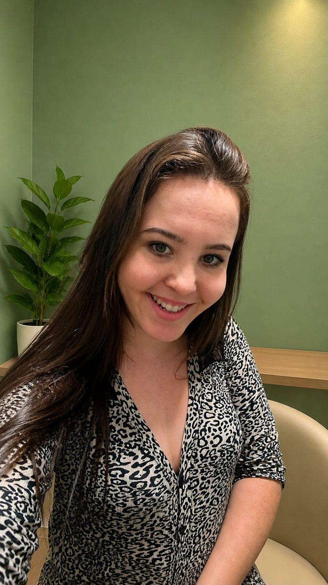
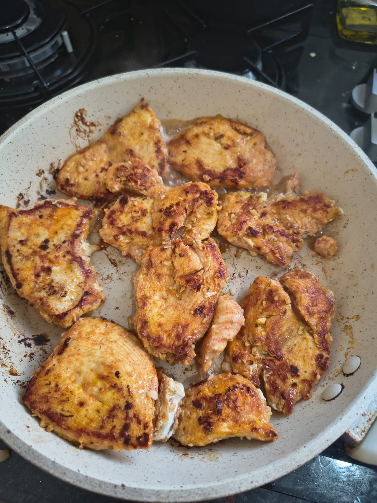
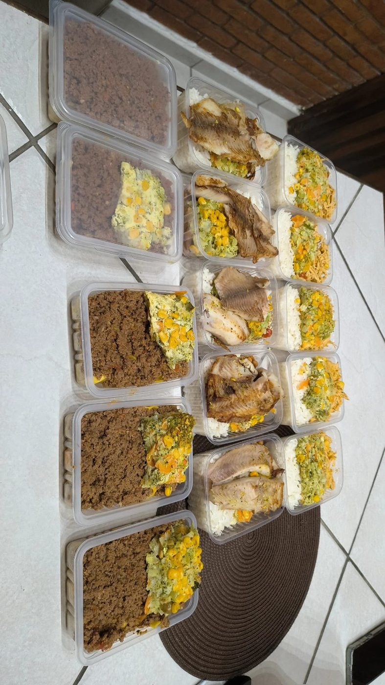
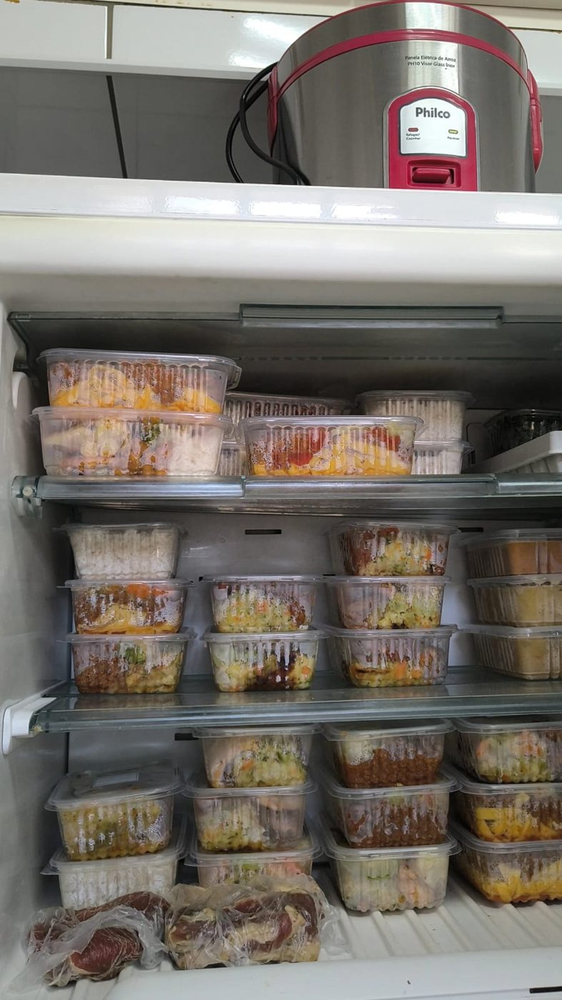

Comida de verdade, pensada por uma nutricionista e feita na sua cozinha.
Eu cuido da sua alimentação nas duas pontas: no consultório, montando um plano que cabe na sua vida, e na sua casa, cozinhando a sua semana inteira.
- Emagrecimento
- Hipertrofia
- Menopausa
Sua semana de comida pronta, feita na sua casa
15 ou 30 marmitas preparadas por mim, na sua casa, com praticidade, organização e qualidade.
Conhecer o serviço Consulta nutricionalUm plano alimentar que respeita a sua rotina
Presencial em Taubaté ou online. Sem dieta engessada, sem alimento proibido.
Ver como eu atendoAbra a geladeira e encontre a semana inteira pronta.
Eu preparo as refeições diretamente na sua casa, com praticidade, organização e qualidade. No dia agendado eu cozinho e deixo tudo organizado e pronto para o seu consumo. E quem cozinha é uma nutricionista.

“Você só precisa abrir a porta. O resto é comigo.”
Você conhece esse dia?
Você sabe o que precisa comer. O que falta é tempo.
O café da manhã vira um café preto
Correndo para sair, a primeira refeição fica para depois. E depois nunca chega.
O almoço é o que estiver mais perto
Lanche, salgado ou o prato feito de sempre, porque não deu para levar nada de casa.
Chegar em casa e não ter nada pronto
Cansaço, fome e a geladeira vazia. O aplicativo de delivery abre quase sozinho.
Os legumes estragando na gaveta
A compra saudável da semana foi feita com boa intenção, e boa parte foi para o lixo.
O dia de folga inteiro na cozinha
Cortar, cozinhar, lavar louça. E na quarta-feira as marmitas já acabaram ou enjoaram.
O plano alimentar bonito, só no papel
Você até tem uma dieta. O que não tem é tempo, prática ou vontade de cozinhar para segui-la.
Agora imagine o contrário.
Você chega em casa, abre a geladeira e o jantar já está ali, feito com carinho e na medida certa.
A solução
Eu vou até a sua casa e cozinho para você.
Não é marmita de fábrica. É comida feita na sua cozinha, com temperos naturais, por uma nutricionista que respeita o seu plano alimentar ou os alimentos que você já gosta de comer.
Preparo na sua casa
As refeições são preparadas diretamente na sua cozinha, com praticidade, organização e qualidade.
15 ou 30 marmitas
Você escolhe a quantidade, de acordo com a sua necessidade.
Do seu plano ou do seu gosto
Sigo todas as orientações do seu cardápio. Se não tiver um, cozinho com os alimentos que você já consome.
Temperos naturais por minha conta
Levo alho, cebola e todos os condimentos naturais necessários para o preparo.
Lista de compras enviada antes
Você só precisa comprar os ingredientes da lista que eu envio previamente.
Tudo organizado e pronto
Deixo as refeições organizadas e prontas para o seu consumo. É só esquentar e comer.
Portfólio · Personal Chef
Da panela para a sua geladeira.
Fotos reais de um dia de preparo: comida feita na hora, porcionada com cuidado e guardada pronta para a semana.

Preparo na horaTemperos naturais, alho e cebola de verdade. 
Porcionado com carinhoArroz, proteína e legumes na medida. 
A semana inteira prontaÉ só abrir a geladeira e esquentar.
Ela na cozinha
Para todo mundo
Tem dieta ou não tem? Funciona dos dois jeitos.
Preparo as refeições conforme os alimentos que você já costuma consumir e as suas preferências.
- Uma conversa antes para entender a sua rotina e o seu paladar
- Comida que você já conhece e gosta de comer
- Preparo caprichado, com temperos naturais
- Sem cardápio estranho, sem comida sem graça
Se você já possui um cardápio ou plano alimentar, eu sigo todas as orientações.
- Leitura atenta do plano: alimentos, porções e restrições
- Refeições preparadas exatamente como o plano indica
- A lista de compras já sai de acordo com o seu cardápio
- Finalmente, a dieta deixa de ser um esforço diário
Como funciona
Do primeiro “oi” à geladeira cheia.
Conversa pelo WhatsApp
Você me conta a sua rotina, os seus gostos, restrições e se segue algum plano alimentar.
Lista de compras
Eu envio a lista previamente. Você só compra os ingredientes; os temperos naturais eu levo.
Dia agendado
Vou até a sua casa e preparo as 15 ou 30 marmitas do pacote escolhido.
Tudo pronto
Deixo tudo organizado e pronto para o seu consumo. É só esquentar e comer.
Pacotes
Escolha quantas refeições você quer de presente para a sua semana.
Toque em um pacote e veja a sua geladeira encher.
Almoço e jantar resolvidos, sem ligar o fogão.
Dúvidas sobre o personal chef
Antes de abrir a porta da sua cozinha.
Preciso ter uma dieta para contratar?
Não. Se você não segue um plano alimentar, o cardápio é montado a partir da sua alimentação atual e das suas preferências. Se já tem um plano, eu sigo as orientações dele.
Quem compra os ingredientes?
Você. Eu envio previamente a lista de ingredientes, e você só precisa comprar o que está nela. Os temperos naturais, como alho, cebola e outros condimentos, eu levo.
Quanto tempo as marmitas duram?
Depende da preparação e de como ficam armazenadas. No dia do preparo eu oriento como conservar e aquecer as refeições.
Preciso providenciar os temperos?
Não. Eu levo todos os temperos naturais necessários para o preparo, como alho, cebola e outros condimentos naturais.
Uso os meus utensílios?
Sim, o preparo acontece na sua cozinha. Na conversa antes do dia agendado a gente confere o que é preciso, como os potes para as marmitas.
Quais cidades você atende?
Taubaté e região. Me chame no WhatsApp com o seu bairro ou cidade que eu confirmo.
Consulta nutricional
Antes de mudar o seu prato, eu quero entender a sua história.
Na consulta eu escuto a sua rotina, os seus horários, o que você gosta de comer e o que já tentou. É dessa conversa que nasce um plano que respeita a sua vida e muda junto com ela.
“Segunda-feira eu começo de novo.”
Aqui não existe recomeçar do zero: a gente ajusta o que você já faz.
“Esse alimento é proibido para mim.”
Nenhum alimento vira inimigo. Ele ganha lugar e medida no seu dia.
“Preciso compensar o fim de semana.”
O fim de semana faz parte do plano, não é um erro para pagar depois.
Para quem
Talvez você tenha chegado aqui porque…
- 01
Já começou várias dietas e desistiu porque era sofrido demais.
- 02
A culpa aparece depois de cada doce, de cada fim de semana, de cada jantar fora.
- 03
A ansiedade decide o que você come mais do que a própria fome.
- 04
A rotina é corrida e você precisa de algo prático, que caiba na agenda de verdade.
- 05
Cada lugar diz uma coisa sobre comida e você já não sabe em quem acreditar.
Áreas de atuação
Para o objetivo que é seu.
- Emagrecimento
Perder peso sem passar fome e sem cortar tudo o que você gosta, com um plano que você consegue manter.
- Hipertrofia
Alimentação pensada para o treino: proteína, energia e recuperação na medida certa para ganhar massa.
- Menopausa
Cuidado com os sintomas, o sono, a disposição e as mudanças no corpo nessa fase, com a comida como aliada.
Consulta presencial
Avaliação completa dos seus hábitos, histórico e objetivos no consultório, no Jardim das Nações, em Taubaté.
Perguntar no WhatsAppConsulta online
A mesma escuta e o mesmo cuidado, por vídeo, para quem prefere a praticidade de ser atendido de casa.
Perguntar no WhatsAppAcompanhamento
Retornos para ajustar o plano conforme a vida acontece: viagens, festas e semanas difíceis entram na conta.
Perguntar no WhatsApp
Convênios
Atendimento nutricional pelo seu convênio.
Você pode fazer a sua consulta comigo usando o seu plano. É só me chamar no WhatsApp com o nome do convênio para agendar.
Agendar pelo convênio- UnimedExceto Unimed Taubaté
- FUSExFundo de Saúde do Exército
Quem sou eu
Prazer, eu sou a Eduarda. Nutricionista que também cozinha.
Tenho 25 anos, sou nutricionista em Taubaté e apaixonada pelo que faço. Atendo no consultório e online, com foco em emagrecimento, hipertrofia e menopausa, e estou sempre em busca de evolução para cuidar cada vez melhor de você.
Como nutricionista, eu ajudo você a ter uma relação saudável com a alimentação e a alcançar os seus objetivos. Mas, ao longo dos atendimentos, percebi que muita gente sabia o que precisava comer e não conseguia colocar o plano em prática: faltava tempo, faltava prática na cozinha, faltava energia no fim do dia.
Foi daí que nasceu a Eduarda Nutri Chef. Como personal chef, eu levo praticidade e saúde para o seu dia a dia, com refeições personalizadas e equilibradas, feitas na sua cozinha e prontas na geladeira.
Ninguém come só com a boca. Comemos com a memória, com o cansaço do dia e com as emoções. Por isso o meu trabalho começa entendendo quem está à mesa.
- EscutaCada plano começa pela sua história.
- Comida de verdadeNada de pó milagroso ou cardápio sem graça.
- PraticidadeDo consultório até a sua panela.
- Registro
- CRN-3 91199
- Áreas
- Emagrecimento · Hipertrofia · Menopausa
- Convênios
- Unimed (exceto Taubaté) · FUSEx
- Atendimento
- Presencial em Taubaté/SP e online
- Personal chef
- Taubaté e região
Avaliações
O que dizem sobre o atendimento.
4,7de 5 · 13 avaliações no Google
Espaço para um relato real do Google sobre a primeira consulta.
Avaliação do Google
Espaço para um relato real do Google sobre a escuta e o acolhimento.
Avaliação do Google
Espaço para um relato real sobre o serviço de personal chef.
Avaliação do Google
Dúvidas
Perguntas sobre a consulta
Atende online?
Sim, com a mesma atenção da consulta presencial.
Como faço para agendar?
Pelo WhatsApp, no horário que for melhor para você.
Atende por convênio?
Sim. Atendo pelos convênios Unimed (exceto Unimed Taubaté) e FUSEx. É só me chamar no WhatsApp para agendar.
Preciso levar exames?
Se tiver exames recentes, traga. Se não tiver, avaliamos na consulta se são necessários.
Posso fazer a consulta e o personal chef juntos?
Pode. Assim o plano alimentar e as marmitas saem da mesma pessoa, falando a mesma língua.
Contato
Vamos cuidar da sua alimentação?
Me conte o que você procura: uma consulta, os pacotes de personal chef ou os dois. Eu respondo pelo WhatsApp.
- WhatsApp(12) 99259-1994
- ConsultórioR. Síria, 306 · Jardim das Nações · Taubaté/SP
- MapaVer no Google Maps
- Instagram@eduardanutrichef
- Linkslinktr.ee/EduardaCastro.Nutri
- ConvêniosUnimed (exceto Taubaté) · FUSEx
- RegistroCRN-3 91199